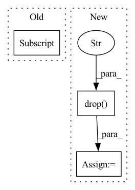

Pattern ID :5557
Before Change
(~idxs_true["start"].isin(idxs_pred["start"]))
| (~idxs_true["end"].isin(idxs_pred["end"]))
]
idxs_false_pos = idxs_pred[
(~idxs_pred["start"].isin(idxs_true["start"]))
| (~idxs_pred["end"].isin(idxs_true["end"]))
]
report[etype] = {
"false_neg": sorted(idx2text(tokens, idxs_false_neg).tolist()),
"false_pos": sorted(idx2text(tokens, idxs_false_pos).tolist()),
}After Change
idxs_pred, on=["start", "end"], indicator="i", how="outer"
)
idxs_false_neg = idxs_all.query("i == "left_only"").drop("i", 1)
idxs_false_pos = idxs_all.query("i == "right_only"").drop("i" , 1)
report[etype] = {
"false_neg": sorted(idx2text(tokens, idxs_false_neg).tolist()),
"false_pos": sorted(idx2text(tokens, idxs_false_pos).tolist()),
}In pattern: SUPERPATTERN
Frequency: 6
Non-data size: 3
Instances Fragment ID: 19578602
Project Name: bluebrain/search
Commit Name: 0bb500551b1b7c6f5bb9228335aa4df30a654e9c
Time: 2021-04-28
Author: francesco.casalegno@gmail.com
File Name: src/bluesearch/mining/eval.py
M Class Name: AnonimousClass
N Class Name: AnonimousClass
M Method Name: ner_errors(6)
N Method Name: ner_errors(6)
M Parent Class:
N Parent Class:
M File Name: src/bluesearch/mining/eval.py
N File Name: src/bluesearch/mining/eval.py
M Start Line: 426
M End Line: 500
N Start Line: 488
N End Line: 572
Before Change
// using config for utils
df_norm = df_utils.normalize(df.copy(deep=True), m.config_normalization.global_data_params)
df_norm = df_utils.normalize(
df_utils.prep_copy_df_dict(df)[0] ["__df__"], m.config_normalization.local_data_params["__df__"]
)
// with utilsAfter Change
df_norm = m._normalize(df)
m.config_normalization.unknown_data_normalization = False
// using config for utils
df = df.drop("ID" , axis=1)
df_norm = df_utils.normalize(df, m.config_normalization.global_data_params)
df_norm = df_utils.normalize(df, m.config_normalization.local_data_params["__df__"])
// with utils Fragment ID: 19578603
Project Name: ourownstory/neural_prophet
Commit Name: 7fcf23557cb5b30885a8a07387d411c61a50a05e
Time: 2022-06-21
Author: mgheorghecr@gmail.com
File Name: tests/test_unit.py
M Class Name: AnonimousClass
N Class Name: AnonimousClass
M Method Name: test_normalize(0)
N Method Name: test_normalize(0)
M Parent Class:
N Parent Class:
M File Name: tests/test_unit.py
N File Name: tests/test_unit.py
M Start Line: 101
M End Line: 132
N Start Line: 102
N End Line: 130
Before Change
return batch, y_means, y_stds
def _inv_normalization(self, y_hat, y_means, y_stds):
return y_stds[:, None] *y_hat + y_means[:, None]
def _create_windows(self, batch, step):
temporal = batch["temporal"]After Change
// Broadcasts outputs and inverts normalization
// Get y scale and shift, and add W dimension
temporal_data_cols = temporal_cols.drop("available_mask" )
y_scale = self.scaler.x_scale[:, temporal_data_cols.get_indexer(["y"]), :]
y_shift = self.scaler.x_shift[:, temporal_data_cols.get_indexer(["y"]), :]
y_scale = torch.repeat_interleave(y_scale, repeats=y_hat.shape[1], dim=1) Fragment ID: 19578600
Project Name: nixtla/neuralforecast
Commit Name: 73dab945c58726e3f150b851bb94e3a003a590a0
Time: 2022-11-02
Author: mergenthaler.m@gmail.com
File Name: neuralforecast/common/_base_recurrent.py
M Class Name: BaseRecurrent
N Class Name: BaseRecurrent
M Method Name: _inv_normalization(3)
N Method Name: _inv_normalization(4)
M Parent Class: pl.LightningModule
N Parent Class: pl.LightningModule
M File Name: neuralforecast/common/_base_recurrent.py
N File Name: neuralforecast/common/_base_recurrent.py
M Start Line: 126
M End Line: 127
N Start Line: 132
N End Line: 141
Before Change
ETT.download(directory)
path = f"{directory}/ett/datasets"
class_group = ETTInfo[group]
y_df = pd.read_csv(f"{path}/{group}.csv")
y_df, X_df = process_multiple_ts(y_df)After Change
y_df = y_df.sort_values(["unique_id", "ds"], ignore_index=True)
y_df = y_df[["unique_id", "ds", "y"]]
X_df = pd.read_csv(f"{path}/{group}/{kind}/df_x.csv")
X_df = y_df.drop("y" , axis=1) .merge(X_df, how="left", on=["ds"])
S_df = None
if cache: Fragment ID: 19578606
Project Name: nixtla/neuralforecast
Commit Name: 8021addd47470ad9779e83950f7be85f3eba457e
Time: 2022-01-31
Author: fede.garza.ramirez@gmail.com
File Name: nixtlats/data/datasets/ett.py
M Class Name: ETT
N Class Name: ETT
M Method Name: load(3)
N Method Name: load(3)
M Parent Class:
N Parent Class:
M File Name: nixtlats/data/datasets/ett.py
N File Name: nixtlats/data/datasets/ett.py
M Start Line: 108
M End Line: 112
N Start Line: 84
N End Line: 89
Before Change
if full:
return self.scenarios_df
else:
summary_columns=[i for i in self.scenarios_df.columns.tolist() if len(self.scenarios_df[[i]] .unique().tolist()) > 1]
return self.scenarios_df[summary_columns]
def run(self):After Change
else:
summary_columns=[]
df=copy.deepcopy(self.scenarios_df)
df= df.drop("parameters" , axis=1)
for col in df.columns:
if len(df[col].unique()) > 1:
summary_columns.append(col)
return self.scenarios_df[summary_columns] Fragment ID: 19578595
Project Name: radtorch/radtorch
Commit Name: c74d61361b398f40474842c49c8b55f3af428dde
Time: 2020-04-14
Author: elbanan@users.noreply.github.com
File Name: radtorch/pipeline.py
M Class Name: Compare_Image_Classifiers
N Class Name: Compare_Image_Classifiers
M Method Name: grid(2)
N Method Name: grid(2)
M Parent Class:
N Parent Class:
M File Name: radtorch/pipeline.py
N File Name: radtorch/pipeline.py
M Start Line: 115
M End Line: 115
N Start Line: 115
N End Line: 121
Before Change
ShiftScale entries containing ``shift`` and ``scale`` parameters for each column
// Compute Global data params
df_merged, _ = join_dataframes(prep_copy_df_dict(df_dict)[0] )
global_data_params = data_params_definition(
df_merged, normalize, covariates_config, regressor_config, events_config
)After Change
// Compute Global data params
df, _, _, _ = prep_or_copy_df(df)
df_merged = df.copy(deep=True).drop("ID" , axis=1)
global_data_params = data_params_definition(
df_merged, normalize, covariates_config, regressor_config, events_config
)
if global_normalization: Fragment ID: 19578613
Project Name: ourownstory/neural_prophet
Commit Name: 7fcf23557cb5b30885a8a07387d411c61a50a05e
Time: 2022-06-21
Author: mgheorghecr@gmail.com
File Name: neuralprophet/df_utils.py
M Class Name: AnonimousClass
N Class Name: AnonimousClass
M Method Name: init_data_params(7)
N Method Name: init_data_params(7)
M Parent Class:
N Parent Class:
M File Name: neuralprophet/df_utils.py
N File Name: neuralprophet/df_utils.py
M Start Line: 303
M End Line: 303
N Start Line: 291
N End Line: 305